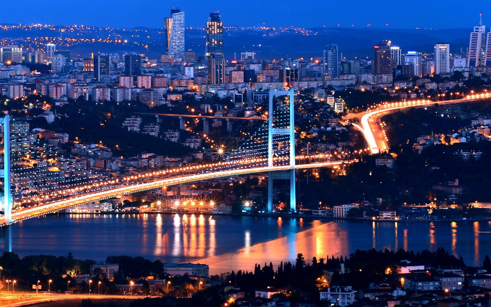

Istanbul

Istanbul blends deep history with a lively modern atmosphere in a way very few cities can. Its historic center holds the Hagia Sophia, the grand Sultan Ahmed Mosque also known as the Blue Mosque, and the ancient palaces of former empires. Walking through the narrow alleys of the Grand Bazaar or taking a ferry along the Bosphorus gives you a real sense of daily life and the many layers of history shaped by the Ottomans, the Byzantines, and earlier civilizations.
Whether you enjoy architecture, culture, markets, amazing food, or simply the vibrant energy of a city that connects Europe and Asia, Istanbul offers an experience unlike anywhere else in Türkiye.
Cappadocia

Cappadocia can only be described as magical. The region is famous for its surreal rock formations known as fairy chimneys along with valleys carved over thousands of years. Visitors explore ancient underground cities, churches carved into stone, and traditional cave homes. Many travelers choose to stay in a cave hotel which adds even more to the experience of the region.
One of the most unforgettable moments here is taking a hot air balloon ride at sunrise. Floating above the valleys as the first light of the day colors the sky creates a scene that feels completely unique to this part of Türkiye.
Antalya

Antalya brings together warm beaches, clear turquoise water, and an interesting mix of old and new. It is a favorite destination for travelers who want both relaxation and culture. The coastline and modern resorts offer a peaceful Mediterranean escape while the historic old town and nearby ancient ruins reflect the stories of civilizations that once lived there.
Whether you are relaxing by the sea, strolling through the old streets, or visiting archeological sites in the area, Antalya provides a holiday that combines scenic beauty with a rich sense of history.